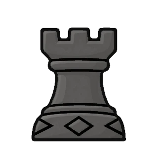
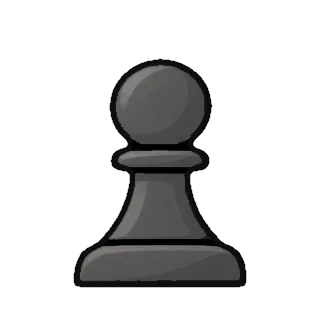
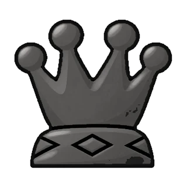
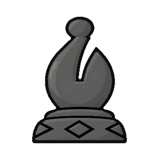
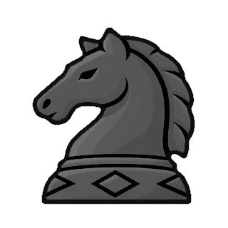
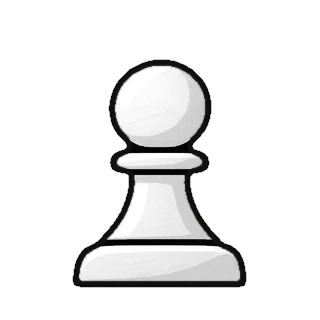

कैसलिंग (Castling) के नियम
इकलौती चाल जिसमें दो मोहरे एक साथ चलते हैं
कैसलिंग कैसे करें
कैसलिंग इकलौती चाल है जिसमें दो मोहरे एक साथ चलते हैं। राजा किसी हाथी की तरफ़ दो खाने चलता है, और वह हाथी राजा के ऊपर से कूदकर उसके बगल वाले खाने पर आ जाता है।
छोटी कैसलिंग (O-O): सफ़ेद राजा e1 से g1 और हाथी h1 से f1। बड़ी कैसलिंग (O-O-O): राजा e1 से c1 और हाथी a1 से d1। काला भी आठवीं पंक्ति पर ऐसे ही करता है।

8
7



सफ़ेद दोनों तरफ़ कैसलिंग कर सकता है: राजा g1 या c1 पर जाएगा।
कैसलिंग कब कर सकते हैं
राजा और वह हाथी, दोनों में से कोई भी पहले नहीं चला हो।
राजा और उस हाथी के बीच कोई मोहरा न हो।
राजा अभी शह में न हो, और न ही ऐसे खाने से गुज़रे या ऐसे खाने पर पहुँचे जिस पर दुश्मन का हमला हो।
आम सवाल
क्या हाथी हमले वाले खाने से गुज़र सकता है? हाँ, सिर्फ़ राजा के खाने मायने रखते हैं। बड़ी कैसलिंग में हाथी b1 से गुज़र सकता है, भले उस पर हमला हो।
पहले शह लगी थी, क्या अब कैसलिंग हो सकती है? हाँ, अगर राजा कभी नहीं चला और अभी शह में नहीं है।
कैसलिंग क्यों करें? एक ही चाल में राजा प्यादों के पीछे सुरक्षित हो जाता है और हाथी बीच की तरफ़ आ जाता है।
BEST CHESS में प्रैक्टिस करें
मुफ़्त Chess Academy में हर चाल ख़ुद चलकर सीखें, बिना रोज़ की लिमिट के पज़ल हल करें, और अपने गेम का रिव्यू करें। ऑफ़लाइन, बिना विज्ञापन, बिना अकाउंट। (ऐप अंग्रेज़ी में है।)